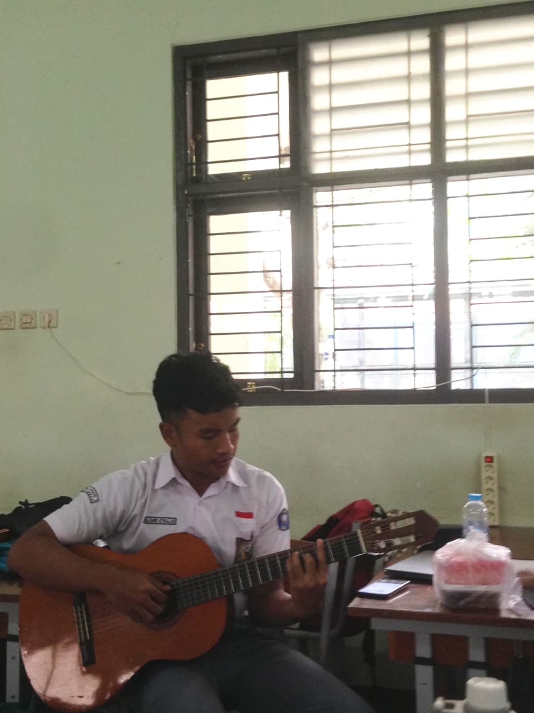
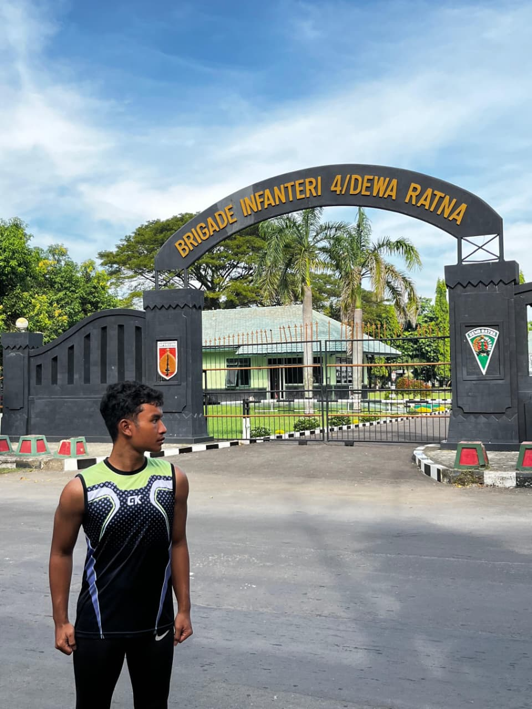

Saya suka banget sama yang namanya main gitar dan memang karena itu, bermain gitar menjadi keahlian plus dari diri saya. Awalnya saya belajar gitar hanya supaya terlihat "keren", meski pada akhirnya saya sadar kalau musik memberi arti lebih dari itu. Saya juga hobi lari, karena ada kaitannya dengan cita-cita saya.
Cita-cita besar saya adalah menjadi seorang Jenderal TNI Angkatan Darat. Ini juga merupakan cita-cita dari ayah saya yang qodarullah belum terwujud. Sebagai anak pertama, saya merasa punya tanggung jawab untuk meneruskan perjuangannya. Karena itu saya kini berjuang agar bisa menjadi bagian dari Taruna AKMIL.
